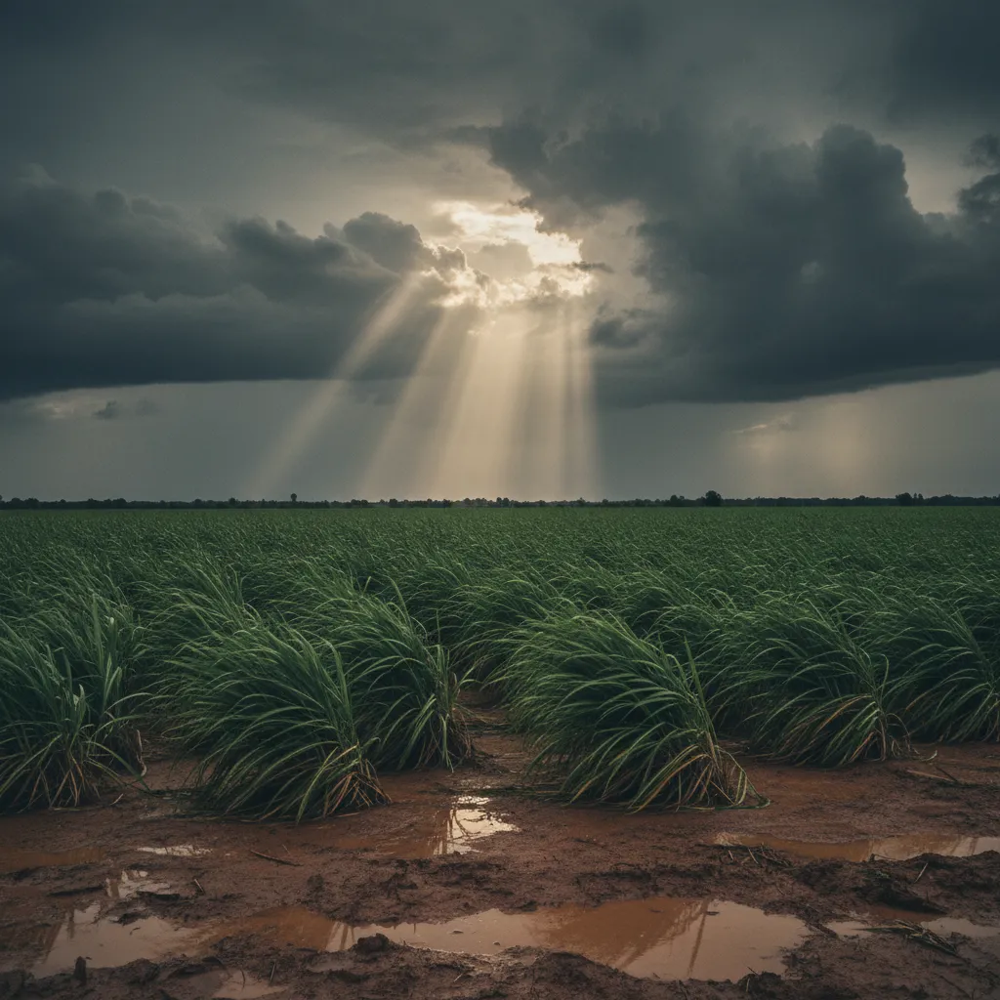
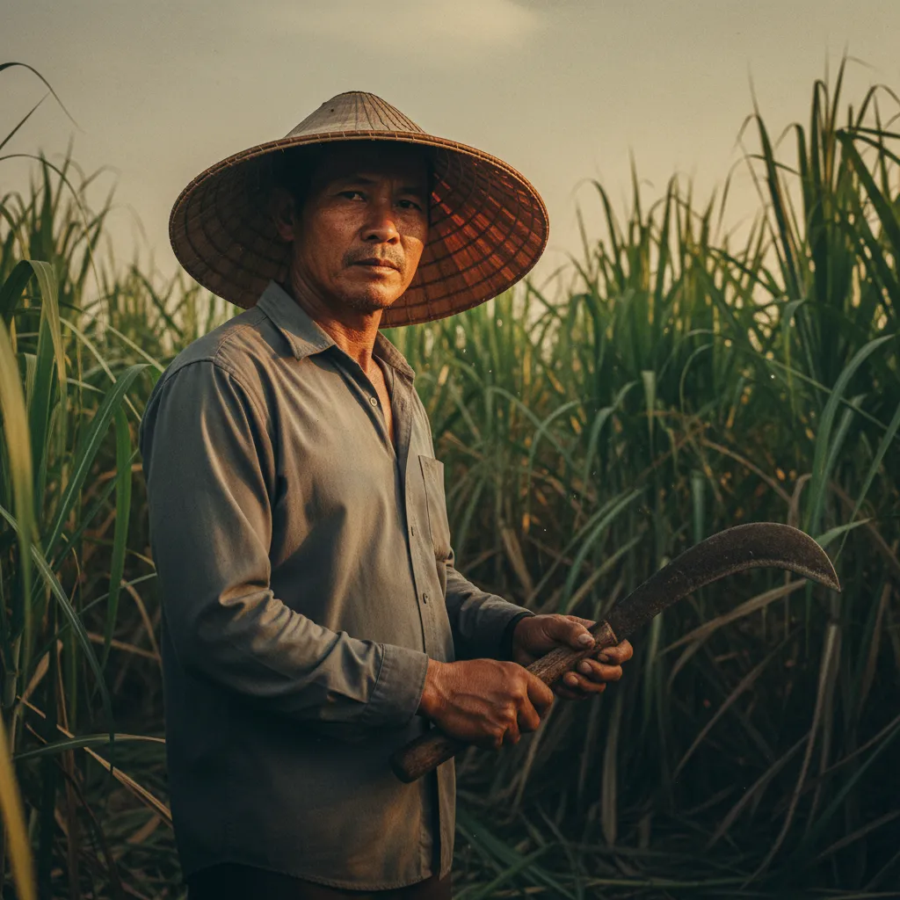
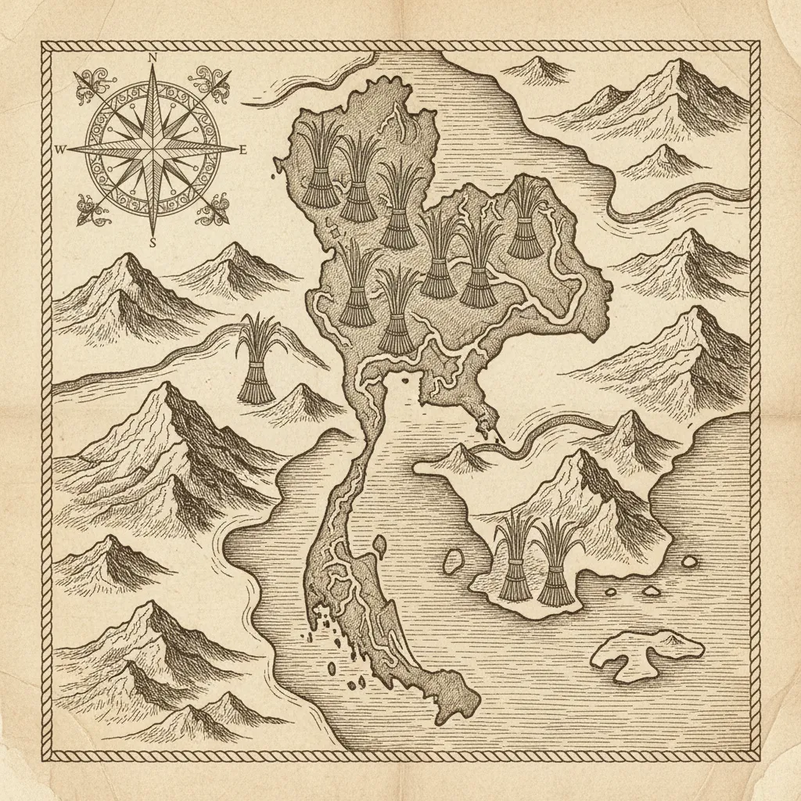
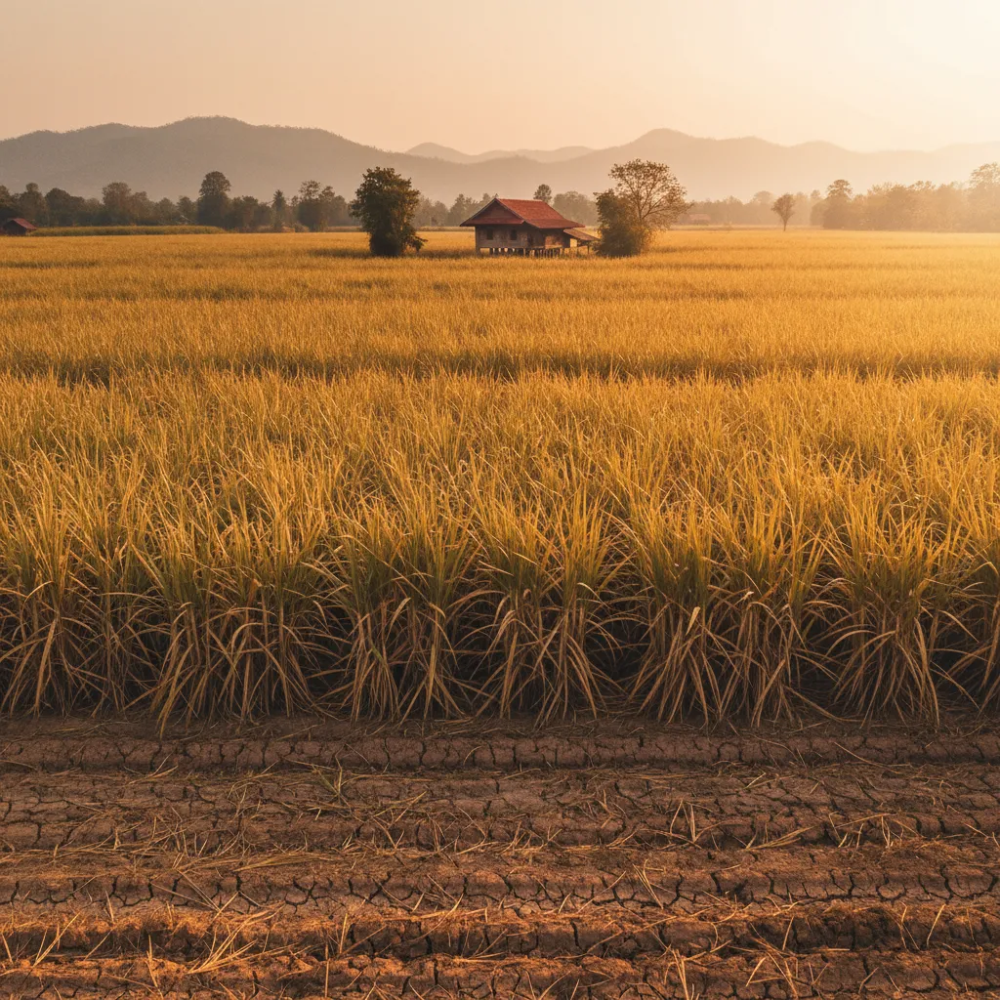
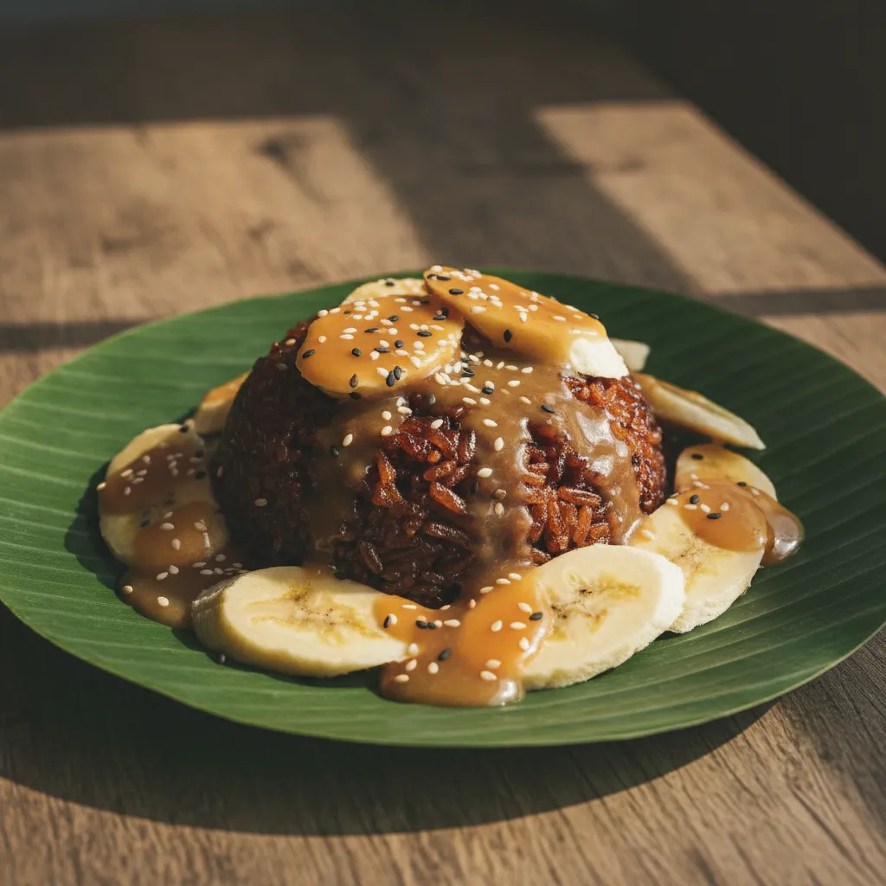

ธันวาคม → กุมภาพันธ์
ฤดูเปิดหีบอ้อย
โรงงาน ๕๘ แห่งทั่วประเทศเริ่มหีบอ้อยพร้อมกัน ผลผลิตประจำปี ๙-๑๑ ล้านตัน อ้อยเข้าหีบ ๘๐-๑๐๐ ล้านตัน — ราคาหน้าโรงงานถูกที่สุดของปี
ทุ่งอ้อยรุ่งอรุณ ภาคอีสาน — ฤดูเปิดหีบเริ่ม ๑ ธันวาคมของทุกปี
❋ ❋ ❋
วงล้อนี้คือสิ่งที่ผู้ค้าน้ำตาลทุกคนต้องอ่านได้ — ฤดูเปิดหีบอ้อยตามประกาศ สอน. เริ่ม ๑ ธันวาคม ปิดประมาณปลายมีนาคม-เมษายน อ้อยที่ตัดในฤดูนี้คือเลือดเนื้อของอุตสาหกรรมทั้งปี¹
โรงงาน ๕๘ แห่งทั่วประเทศเริ่มหีบอ้อยพร้อมกัน ผลผลิตประจำปี ๙-๑๑ ล้านตัน อ้อยเข้าหีบ ๘๐-๑๐๐ ล้านตัน — ราคาหน้าโรงงานถูกที่สุดของปี
โรงงานทยอยปิดหีบ สต็อกสูงสุด ส่งออกพีค ๖-๗ ล้านตัน — สั่งล็อตใหญ่ตอนนี้ราคาคุ้มที่สุด
เกษตรกรลงปลูกอ้อยรอบใหม่ มรสุมเข้า อ้อยเติบโต — ตลาดในประเทศเริ่มเห็นราคาขยับขึ้น
สต็อกหมด รอผลผลิตใหม่ ราคาสูงสุดของปี — ระยะที่ผู้ค้ารายเดิมได้เปรียบ
¹ ตามประกาศสำนักงานคณะกรรมการอ้อยและน้ำตาลทราย (สอน.) — พ.ร.บ. อ้อยและน้ำตาลทราย พ.ศ. ๒๕๒๗
มหาสมุทรแปซิฟิกควบคุมว่าจะมีน้ำตาลกี่ตันในแต่ละปี — ปีที่ ENSO เปลี่ยนเฟส คืออาวุธลับของผู้ค้าน้ำตาล อ่านล่วงหน้า ๖ เดือน เห็นราคาในกระเป๋าก่อนใคร²
ฝนมาตรงฤดู อ้อยสมบูรณ์ ผลผลิต ๑๑ ล้านตัน เกษตรกรขยายพื้นที่ — ส่งออก ๖.๘ ล้านตัน
แล้ง + ศัตรูพืช → อ้อยเสียหาย ผลผลิตลด ๓๐% เหมือนปี ๒๕๖๖ ที่ราคาโลกพุ่ง ๑๐๐% YoY ในไม่กี่เดือน
| ปี | เฟส ENSO | อ้อย (ล้านตัน) | น้ำตาล (ล้านตัน) | ราคา ¢/ปอนด์ | ที่มา |
|---|---|---|---|---|---|
| ๒๕๖๖ | เอลนีโญ | 76 | 8.8 | 26.5 | USDA |
| ๒๕๖๗ | เอลนีโญ ปลาย | 82 | 8.7 | 22.3 | Krungsri |
| ๒๕๖๘ | กลาง (ENSO-neutral) | 95 | 10.3 | 19.0 | SCB EIC |
| ๒๕๖๙ | ลานีญา ▲ | 100+ | 11.0 | 17.0 | USDA TH-SUG-Annual |
| ๒๕๗๐ (คาด) | เอลนีโญ ▼ | ~75 | ~8.5 | ~30+ | SCB EIC คาดการณ์ |
² ข้อมูลรวบรวมจาก USDA Thailand Sugar Annual, Krungsri Research อุตสาหกรรมน้ำตาล, SCB EIC Industry Outlook



ภาคอีสานคือบ้านของอ้อย — ๖๕% ของผลผลิตน้ำตาลของประเทศมาจากนี้ · รองลงมา ภาคกลาง ภาคเหนือ และภาคตะวันออก
ประเทศไทยเป็นผู้ผลิตน้ำตาลอันดับ ๔ ของโลก และผู้ส่งออกอันดับ ๒ รองจากบราซิล โรงงานน้ำตาล ๕๘ แห่งกระจายตัวใน ๔ ภูมิภาค กลุ่มผู้ผลิตใหญ่ ๗ กลุ่ม — มิตรผล TRR ไทยรุ่งเรือง KSL KTIS Korat Industry Cristalla Wangkanai — ครองตลาดถึง ๘๕%
| ภาค | โรงงาน | ผลผลิต | กลุ่มเด่น |
|---|---|---|---|
| อีสาน | 26 | ~65% | มิตรผล KSL ครบุรี |
| กลาง | 17 | ~22% | TRR Cristalla |
| เหนือ | 8 | ~10% | KTIS Wangkanai |
| ตะวันออก | 7 | ~3% | เอราวัณ น้ำตาลทรายตะวันออก |
บุ่นเส่ง ไทยชูการ์ — บ้านอยู่วารินชำราบ ใจกลางเขตอ้อยอีสาน — ทำงานตรงกับโรงงานทั้ง ๕๘ แห่ง ตั้งแต่ พ.ศ. ๒๕๒๙
พื้นโรงงานน้ำตาล — หม้อกลั่นทองแดง อาวุธของฤดูเปิดหีบ
ตัวเลขเหล่านี้ไม่ใช่การคาดเดา — รวบรวมจากแหล่งทางการ ๓ แห่ง อัปเดตประจำฤดู
| กลุ่ม | โรงงาน | ส่วนแบ่ง | ยี่ห้อหลัก | จุดเด่น |
|---|---|---|---|---|
| มิตรผล | 7 | 21% | มิตรผล | เบอร์ ๑ ของไทย อันดับ ๔ ของโลก ICUMSA ≤๔๐ |
| TRR ไทยรุ่งเรือง | 6 | 17% | ษฎา / ลิน | เบอร์ ๒ ของเอเชีย คุณภาพใกล้มิตรผล |
| KSL | 5 | 13% | นิวกรุงไทย | SET-listed ครบวงจร Pol 99.8% |
| KTIS | 3 | 11% | เกษตรไทย | SET-listed ภาคเหนือ ปลายน้ำเอทานอล |
| Korat Industry | 3 | 9% | ตะวัน | ผลึกเล็ก 0.40-0.70mm |
| Cristalla | 3 | 8% | คริสตอร่า | ภาคกลาง ผลึกใส |
| Wangkanai | 2 | 6% | วังขนาย | ออร์แกนิก รายแรกของไทย |
ที่มา: USDA Thailand Sugar Annual, Krungsri Research, SCB EIC, สอน., รายงานบริษัท SET
เส้นโค้งนี้คือเรื่องเล่าของอุปทาน อุปสงค์ และมหาสมุทรแปซิฟิก — แต่ละจุดสูงสุดมีเรื่องราว ทุกจุดต่ำสุดมีบทเรียน
๒๕๖๖ — เอลนีโญรุนแรง อินเดียแบนส่งออก
ค่ากลางย้อนหลัง สำหรับเทียบยุคปกติ
๒๕๖๙ — ลานีญาดันอุปทาน ราคาตก -29% จาก ๒๕๖๖
ที่มา: ICE Sugar No.11 futures, USDA Sugar World Markets and Trade — ตัวเลขเฉลี่ยทั้งปี

ทุ่งอ้อยปลายฤดูแล้ง — อ้อยที่สุกพร้อมตัด ความหวานสะสมสูงสุดของปี ก่อนเข้าโรงงาน
ฤดูเปิดหีบอ้อย ในประเทศไทยกำหนดโดยประกาศของ สำนักงานคณะกรรมการอ้อยและน้ำตาลทราย (สอน.) ทุกปี เริ่มตั้งแต่ ๑ ธันวาคม ปิดประมาณปลายเดือนมีนาคม-เมษายน — เป็นช่วงเดียวของปีที่โรงงานน้ำตาล ๕๘ แห่งทั่วประเทศกลับมามีชีวิตพร้อมกัน เครื่องจักรหีบอ้อยที่ดับมา ๘ เดือนเริ่มต้นใหม่ ผู้คนในสวนอ้อยกลับเข้ามาในโรงงาน อ้อยที่สะสมมาทั้งปีถูกกลั่นเป็นน้ำตาลในไม่กี่เดือน
ก่อนวันเปิดหีบ โรงงานหลายแห่งมีพิธี "บวงสรวงเครื่องจักร" — สืบทอดมาจากธรรมเนียมโรงงานยุค พ.ศ. ๒๔๘๐ — เพื่อขอให้การหีบอ้อยตลอดฤดูราบรื่น ไม่มีอุบัติเหตุ ผู้บริหารและคนงานเก่าแก่จะร่วมกันจุดธูปเทียน ถวายผลไม้ และอ้อยช่อแรกของฤดู ที่หน้าเครื่องหีบ — ในยุคใหม่กระบวนการนี้รวบรัดลง แต่ในโรงงานของกลุ่มมิตรผล ษฎา และอีกหลายแห่ง ยังถือเป็นพิธีศักดิ์สิทธิ์ที่ผู้บริหารระดับสูงต้องร่วม
เกษตรกรผู้ปลูกอ้อยเรียกฤดูนี้ว่า "ฤดูเก็บเกี่ยวฝน" — เพราะอ้อยเป็นพืชที่กักเก็บน้ำฝนไว้ในต้นแล้วเปลี่ยนเป็นน้ำตาล อ้อยตันละ ๑,๐๐๐ บาทที่เกษตรกรขายให้โรงงาน คือผลผลิตของน้ำฝนตลอดปีที่ผ่านมา ฝนน้อย — อ้อยน้อย — น้ำตาลแพง ฝนพอดี — อ้อยอ้วน — น้ำตาลถูก นี่คือเหตุผลที่ผู้ค้าน้ำตาลทุกรายต้องอ่านพยากรณ์อากาศแม่นกว่าชาวนา
ในวงการผู้ค้าน้ำตาลขายส่ง ธรรมเนียมหนึ่งที่ยังคงสืบทอด — "โทรเช็ค" — ราคาน้ำตาลเปลี่ยนเป็นชั่วโมง ไม่ใช่เป็นวัน เพราะตลาดโลกขยับตามข่าวบราซิล อินเดีย และพยากรณ์อากาศแปซิฟิก ผู้ค้าที่อยู่ในวงการนานจึงไม่ตอบราคาทาง LINE หรืออีเมล — เฮียโหน่งจะหยิบโทรศัพท์ทันทีเพื่อให้ราคาที่จริงในนาทีนั้น
"น้ำตาลทรายไม่ใช่สินค้า — มันเป็นปฏิทิน อ่านปฏิทินเป็น ก็รู้จะซื้อเมื่อไหร่"
— เฮียโหน่ง บุ่นเส่ง ไทยชูการ์ ๔๐ ปีในวงการ
อ้างอิง: พระราชบัญญัติอ้อยและน้ำตาลทราย พ.ศ. ๒๕๒๗ — ประกาศ สอน. ฤดูการผลิต; ธรรมเนียมโรงงานบันทึกในสารคดี Sugar Asia Magazine, รายงานบริษัทมิตรผล (SET)

ข้าวเหนียวมูนหน้ากระฉีก — ใช้น้ำตาล W3 (ICUMSA ≥๑,๒๐๐) เพื่อสีและกลิ่นคาราเมล
ลำอ้อยตัดสด — ที่มาของน้ำตาลทรายแดง ก่อนผ่านการกลั่น
ขนมไทยที่ใช้น้ำตาลทรายแดงทำให้ "เป็นไทย" จริงๆ มี ๓ คุณสมบัติที่น้ำตาลขาวให้ไม่ได้ — สีน้ำตาลทองแดง ที่ทำให้กระฉีกเป็นกระฉีก ไม่ใช่กระฉีกขาว — กลิ่นคาราเมลอ่อนๆ จากกากน้ำตาลที่เหลือในผลึก — และเนื้อสัมผัสที่ชุ่มชื้นกว่า เพราะ W3 มีความชื้นในตัว ๐.๒๐% เทียบกับ W1/W2 ที่แห้งกว่า
| ข้าวเหนียว | 300 ก. |
| กะทิ | 250 มล. |
| น้ำตาลทรายแดง W3 | 120 ก. |
| เกลือ | 2 ก. |
| มะพร้าวขูด (กระฉีก) | 100 ก. |
เคล็ดลับเฮียโหน่ง: เลือก W3 ของมิตรผลหรือเอราวัณ ซึ่งสีคาราเมลเข้มกว่ายี่ห้ออื่น — ใช้ ๑๒๐ กรัม ต่อข้าวเหนียว ๓๐๐ กรัม กระฉีกจะหวานพอดี ไม่หวานเกิน
❋ ❋ ❋
ลูกค้าจริงในไทย (ขออนุญาตปิดชื่อ) — แต่ละเคสมีปัญหาต่างกัน วิธีแก้ต่างกัน — ลองดูว่าเคสไหนใกล้กับธุรกิจของคุณ
"เหมือนได้พนักงานเพิ่ม ๑ คน" เคยซื้อจากห้างค้าส่ง ราคาผันผวนเดือนละครั้ง ส่งคนไปขนเอง — เปลี่ยนเป็นบุ่นเส่งสั่ง ๘ ตัน/รอบ ส่งถึงครัวกลาง ราคาคงที่ตามสัญญา
ผล: ประหยัด ~15% ลดเวลาจัดซื้อ 8 ชม./เดือน
"เงินทุนหมุนเวียนคืนกลับมา" เคยซื้อตรงโรงงานใหญ่ — ราคาดีแต่ต้องสำรองสต็อก ๑๐๐ ตันในโกดัง — เปลี่ยนเป็นบุ่นเส่ง สั่งทุก ๒ สัปดาห์ ลดสต็อกเหลือ ๒๐ ตัน
ผล: ปลดเงินทุน ๒.๔ ล้านบาท คืนสภาพคล่อง
"ขายเพิ่ม ๓๐%" เคยประสานหลายโรงงาน — ลูกค้าโทรเช็ค ๕ ยี่ห้อตอบไม่ทัน — ใช้บุ่นเส่งเป็น single source ตกลงราคาล่วงหน้าทุกสัปดาห์
ผล: ตอบลูกค้าเร็วกว่าคู่แข่ง ขายเพิ่ม ๓๐%
"คุณภาพ W3 คงที่ทั้งปี" ต้องการ W3 สีและกลิ่นคงที่ — บุ่นเส่งหา W3 จากโรงงานเดียว ทดสอบ ๓ ล็อตก่อนคู่ค้า ส่งทุก ๔ เดือน
ผล: คุณภาพซีอิ๊วคงที่ ลูกค้าโรงแรมไม่ร้องเรียน
ปฏิทินน้ำตาลส่งฟรีทุกฤดูเปิดหีบ — แต่สิ่งที่จริงๆ คุณต้องการคือ ราคา และ ของจริง โทรเข้ามา ๑๕-๓๐ นาที เฮียโหน่งเช็คราคา + สต็อกโรงงาน + ระยะเวลาส่ง — แจ้งกลับให้
เฮียโหน่ง · จันทร์-เสาร์ ๐๘:๐๐-๑๘:๐๐ · รับสายเอง ตอบใน ๑๕-๓๐ นาที
☎ โทรเลยส่งภาพรถ-เอกสาร-ที่อยู่ — สะดวกสำหรับลูกค้าใหม่ที่ต้องส่งเอกสารยืนยัน
+ เพิ่มเพื่อน| ๑. ยี่ห้อ | มิตรผล / ษฎา / KSL / ตะวัน / วังขนาย / ฯลฯ — ถ้าไม่แน่ใจ เฮียแนะนำ |
| ๒. ประเภท | W1 ขาวบริสุทธิ์ / W2 ขาวธรรมดา (นิยมที่สุด) / W3 แดง |
| ๓. จำนวน | ขั้นต่ำ ๘ ตัน (= เต็มรถ ๖ ล้อ) สำหรับจัดส่ง — ไปรับเองสั่งตามจำนวน |
| ๔. จังหวัดปลายทาง | จัดส่งทั่วประเทศ ๗๗ จังหวัด · ๓-๕ วันทำการ · เก็บเงินปลายทาง |